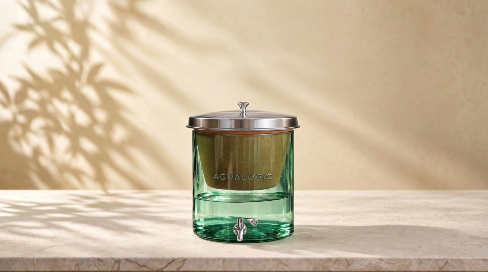
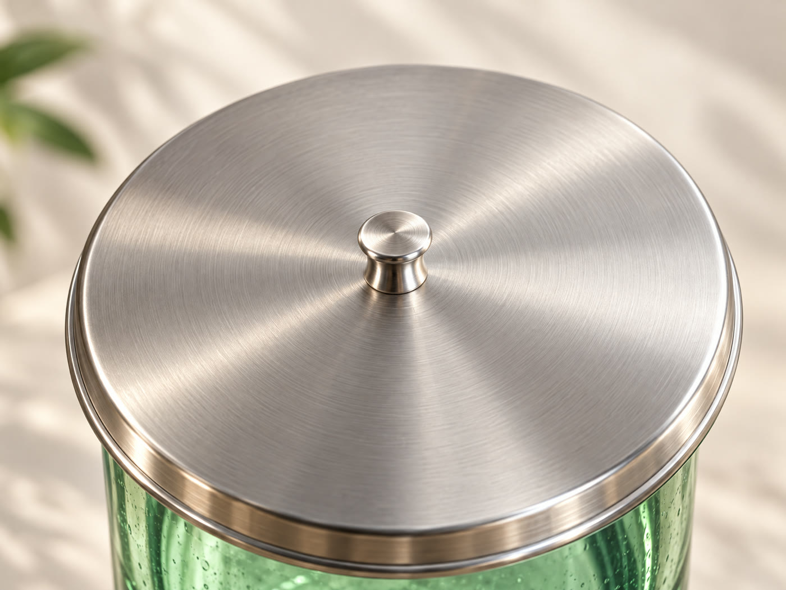
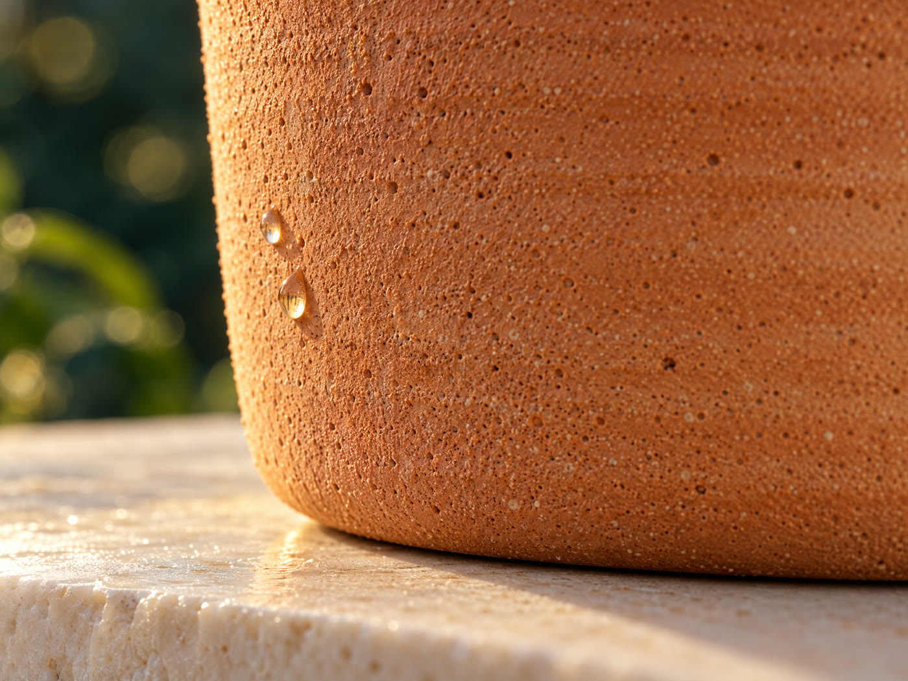
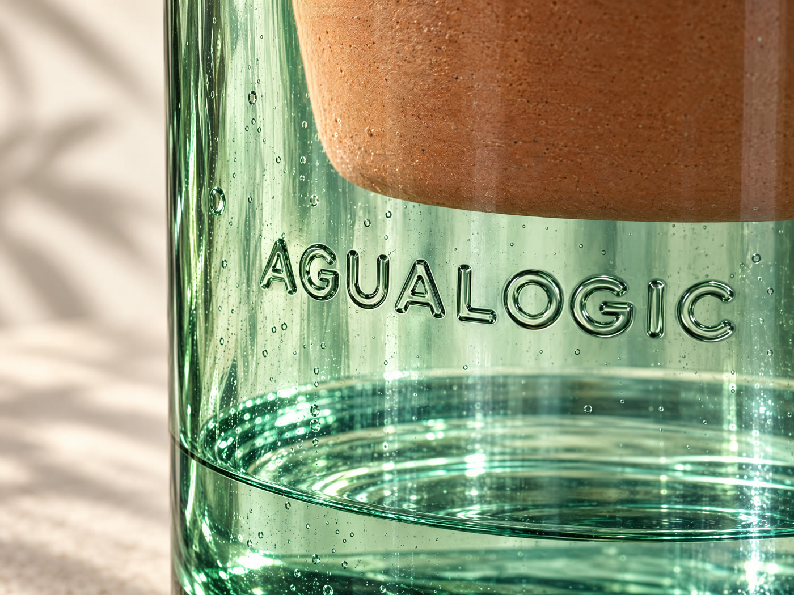
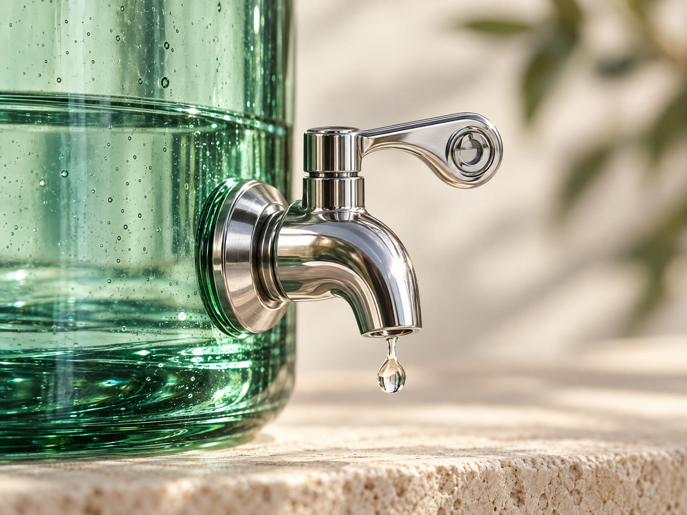
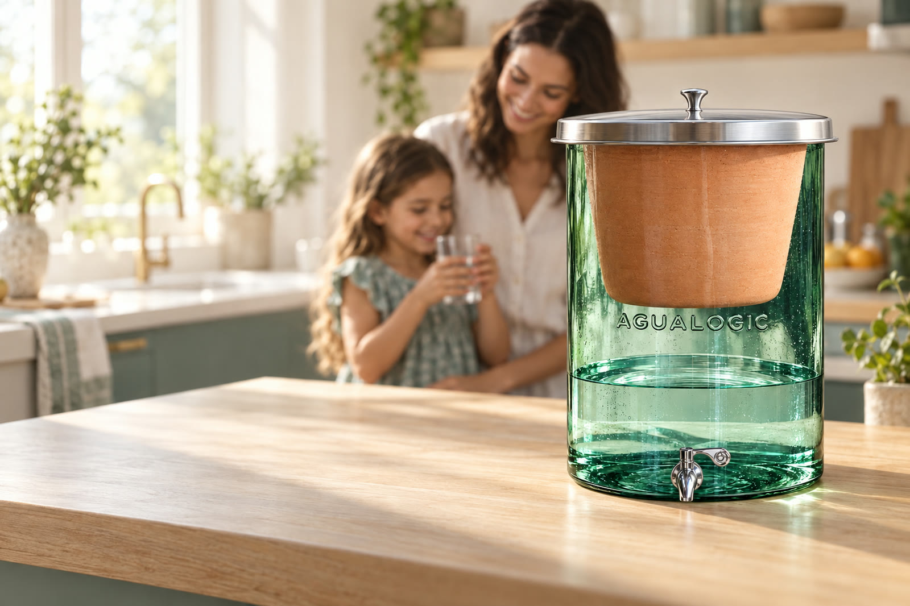

Agua pura, hecha de barro.
Sin luz. Sin instalación. Sin botellones.
El barro detiene lo que no ves.
Bacterias, parásitos y microplásticos se quedan en poros de 0,2 micras.
Deja de hervir. Deja de cargar.
Llenas arriba, esperas, sirves abajo.
Claridad que cuida.
Filtro Agualogic de 20 litros. Envíos en Villavicencio y el Meta.

Agua pura, hecha de barro.
Filtro Agualogic de 20 litros. Sin luz, sin instalación, sin botellones.
Pide el tuyo por WhatsAppHervir, esperar, cargar, repetir.
Hervir no saca lo que llega por la tubería. Y el botellón se acaba justo cuando más lo necesitas.
- Hervir el agua y esperar a que se enfríe.
- Subir un botellón de 20 kilos por las escaleras.
- El sabor a cloro del agua de la llave.
- Quedarse sin agua justo el domingo.
Tres capas. Cero electricidad.
Llenas la vasija de barro. La gravedad hace el resto: el agua atraviesa el barro gota a gota y cae limpia al vidrio.
Así trabaja tu filtro: despacio y sin enchufe.
- 01
Arcilla
Sus poros de 0,2 a 0,5 micras detienen sedimentos, bacterias y parásitos.
- 02
Carbón activado
Le quita al agua el cloro, el color, el olor y el sabor raro.
- 03
Plata coloidal
Actúa sobre coliformes y bacterias, incluida la E. coli.
Llenas la parte de arriba y en unas horas tienes agua lista. Sin tubería, sin enchufe y sin técnico.
Lo midió el laboratorio, no nosotros.
Pruebas del Laboratorio de Ingeniería Ambiental de la Universidad Nacional de Colombia, acreditado por el IDEAM, y de la Universidad del Magdalena, frente a la Resolución 2115 de 2007 para agua de consumo humano.
Menos turbiedad
De 40,5 a 1,94 UNT. Máximo permitido: 2 UNT.
Coliformes y E. coli removidos
En las muestras analizadas.
Menos arsénico
De 21,7 a 3,3 µg/L.
Son resultados sobre las muestras indicadas en cada informe. No garantizan un resultado idéntico en cualquier fuente de agua. Te enviamos los informes completos por WhatsApp si los quieres ver.
Vidrio, barro y acero. Nada más.
Un filtro que se ve bien en tu cocina y que no suelta nada raro en el agua.
- Capacidad
- 20 litros
- Medidas
- 45 cm alto · 34,5 cm diámetro
- Peso
- 14 kg aprox.
- Materiales
- Vidrio, acero inoxidable, filtro cerámico
- Filtro de barro
- Dura 2 años
- Mantenimiento
- Una vez al mes, solo con agua




¿Cuánto se te va en botellones?
Mueve los controles con lo que gastas hoy en tu casa.
El precio es de referencia. Ponle el que pagas de verdad.
Son $66.000 cada mes.

"Se ve en el barro toda la suciedad."
Muy recomendados sus productos. Desde hace un año estoy usando sus filtros, también sus soportes para filtro y sus jarras de peltre. Se ve en el filtro de barro toda la suciedad que filtra del agua. No conozco la vida diaria sin los filtros de AguaLogic.
Excelente alternativa para tomar un agua purificada y de calidad, de vidrio y materiales en general ecológicos. El filtro viene con un folleto con todas las instrucciones de uso y me ha ido súper bien.
Espero con mucha ilusión que sea una buena decisión, ya apenas veo los beneficios del filtro. No cambio la vida diaria sin los filtros de AguaLogic.
Estamos en Villavicencio. Te contestamos nosotros.
Atención por WhatsApp
Te ayudamos a elegir antes de comprar y te seguimos atendiendo después.
Envíos en el Meta
Villavicencio y municipios cercanos. Fuera de la ciudad el envío tiene un costo adicional.
Te enseñamos a usarlo
Te explicamos el curado inicial del filtro y el lavado de cada mes.
Garantía Agualogic
Si hay un defecto de fábrica, nosotros hacemos el trámite con Agualogic por ti.
Lo que nos preguntan siempre.
¿Te quedó otra duda? Escríbenos y te respondemos.
¿Necesita luz o instalación?
No. Funciona solo con la gravedad. Lo pones en el mesón, llenas la vasija de barro y listo. No se conecta a la tubería ni a un enchufe.
¿Cuánto cuesta?
Escríbenos por WhatsApp y te damos el precio del modelo que te sirve, con el costo del envío a tu municipio.
¿Cada cuánto se cambia el filtro de barro?
Cada 2 años. Después, la vasija vieja te sirve como matera para una planta.
¿Cómo se lava?
Una vez al mes. El filtro de barro se lava solo con agua limpia, sin jabón ni cloro. El vidrio, la tapa y la llave se lavan con agua y jabón. El vidrio no se pone boca abajo ni se llena con agua caliente.
¿Hacen envíos fuera de Villavicencio?
Sí, a municipios del Meta como Acacías, Restrepo y Cumaral. Para estos el envío tiene un costo adicional.
¿Tiene garantía?
Sí. Si hay un defecto de fábrica, Pureza Natural hace el trámite de la garantía ante Agualogic en tu nombre.
Este mes, sin botellón.
Déjanos tu nombre, tu celular y tu municipio. Te escribimos con el precio y coordinamos la entrega.